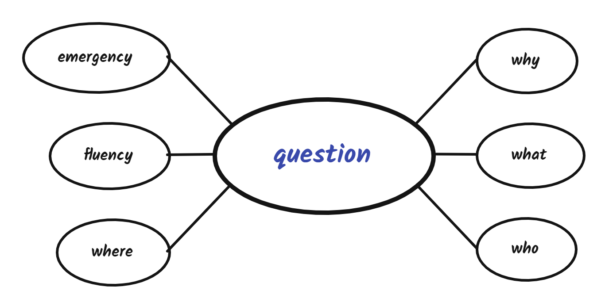

2022-2-5-学习笔记
PM 需要形成自己的、符合产品岗位的思维方式、才能更好地做出适应市场、满足用户需求的产品。
一、PM 的思维方式
1、从直接回答问题，到先搞清楚问题
看到问题不要先回答，面对一个问题时首先要收集信息，采集需求然后整理信息，找出问题的核心是什么？将问题拆解，多问自己对于问题的 what、why、who、where、fluency、emergency 都足够了解了没。

只做一次的事情找可行解，反复做的事情则要寻找最优解。
学会断舍离，找到用户的核心需求，围绕核心需求去做产品，去除冗余功能。
2、以自我为中心，到以用户为中心
不同用户的需求是不一样，所以解决方式也不一样。这会影响到产品的架构设计，比如滴滴，用户的需求是快速打到车，所以主页面是地图，用户填写目的地，选择不同的车型，就可以了；而司机的需求是快速抢单，所以主页面是用户订单列表。
我们要具备 “同理心 ”，学会换位思考，站在用户的角度去思考问题，而不是以个人喜好主观的去判断一个产品的好坏。比如在竞品分析中，需要客观地去评价竞品的功能，使用数据和信息来作证判断。
3、从只看到现象，到发现问题的本质
不再被表面蒙骗，要学会追问逻辑的尽头。任何事物的本质都相对简单。
最经典的一个商业案例来自麦当劳的一个内部项目，目标是增加店里奶昔的销量。
大公司做这类项目的一般流程都是：先定义奶昔这个产品在市场的定位是什么，然后选出最可能购买奶昔的人群，之后组织一些典型客户来做各种调研和采访。
这么一通折腾下来，麦当劳的奶昔在口味和性价比上越来越有进步，但是销量却没什么增长。后来，麦当劳就请了哈佛商学院的克里斯滕森教授来继续研究这个项目，看看有没有一些其他的解决方案。
一开始，克里斯滕森的团队关注的主要也是产品。他们对产品做了很多研究，但也没得出什么新的结论。这时候，团队里面有一个研究人员决定忽略奶昔本身，直接去研究顾客。于是他每天坐在麦当劳里长达18个小时，观察都有哪些人在什么时候买奶昔。
结果，他发现了一个有意思的事情： 他所在的那家麦当劳40%的奶昔都是早上卖出去的，而且买这些奶昔的顾客一般都是一个人，也不会搭配奶昔买其他别的东西，并且基本都是拿回车上喝。
克里斯滕森的团队觉得很奇怪，因为早上喝奶昔好像并不太符合大家对这种食物的印象。于是他们就开始采访这些买奶昔的顾客，问他们为什么要买奶昔。最终他们发现，这些顾客买奶昔的理由是这样的：
首先，他们都要开一段很长又无聊的车，一般是去公司上班或者去办事，所以想买个好吃的在路上打发时间；
其次，他们早上的时候虽然不饿，但一般等到10点至11点左右就会开始饿了，所以先提前垫垫肚子；
另外还有一个特点，就是这些人一般在吃东西的时候都有一些限制。比如一般他们着急去上班，没法等太久；穿着工作服，不能弄脏；再有就是，大部分人因为要开车，最多只能空出一只手来。
观察到这些之后，克里斯滕森就提出了一个很经典的观点，他说， 用户购买的并不是某种产品或者服务，其实他们做的是，“雇佣”你的产品或者服务，来完成他们面临的某种任务。
真正的理解客户不是机械地去做调研、问一些调查问题，简单得出一些结论就完了。重要的是真正带着同理心去观察你的客户，了解隐藏在他们行为后面真正的需求和渴望是什么，透过表象看到本质。这样才能真正做出好的产品。
二、PM 需要有哪些性格特性
1、保持好奇心
当今互联网的信息具有很强的时效性，如果不提前抓住机会进入到需求蓝海就会错失先机，那么再次进入这个领域就会很困难。
养成每天都去思考手机的里产品的习惯，尝试着多问问自己，这个产品/功能满足得了哪几类的哪些需求？为什么这个功能这么做，而不那样做？这个产品/功能是否还可以改善？
2、创新和持续学习
创新精神很重要，做同类产品时，我们一定要做出差异性来，否则，原先的用户是很难转移过来。因为人会习惯性的使用之前的产品。
3、良好的逻辑思维
一方面需要人们对关键细节的追求，另一方面也需要有大局观，知道战略比战术更重要，知道合理妥协的必要性。
这是一种自上而下的产品设计，切忌再没有弄清楚产品需求和逻辑时，就直接开始画图。
4、善于沟通
因为产品是有多个角色一起去协助完成的，所以良好的团队沟通是必不可少的。
5、抗压
协调多方的角色，不要变成背锅侠……